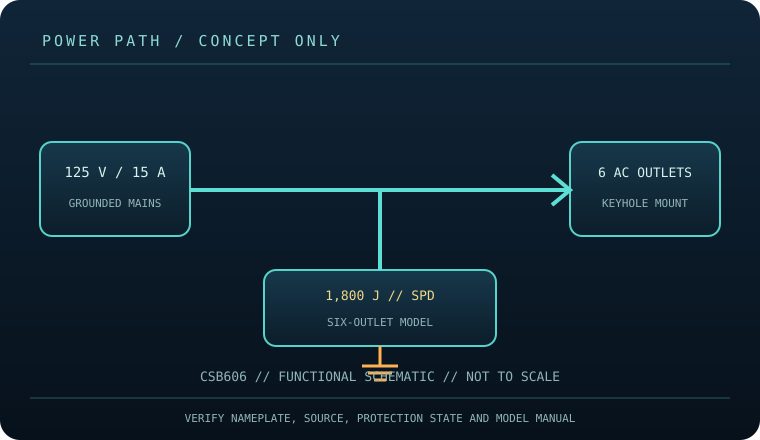

[ SURGE PROTECTIVE DEVICE // STATIC REFERENCE ]
CyberPower CSB606 Surge Protector
Six NEMA 5-15R outlets, 1,800 J, 125 V / 15 A and 6 ft cord; grounded point-of-use strip, no battery. This record describes the named model only; verify nameplate, region, revision, approvals and current manufacturer instructions before deployment.

SAFETY SCOPE: Surge protective devices do not provide outage runtime, guarantee protection from every event, repair defective grounding, or replace qualified electrical installation. Capacity and topology below are based on the cited product literature; where a value is not published, it is not guessed.
Model specifications and topology
| Manufacturer / exact model | CyberPower CSB606 — named North American model; revisions and region-specific suffixes must be checked on the actual label. |
|---|---|
| Class / topology | Cord-connected, six-outlet point-of-use surge protector with MOV-based suppression as described for this product family, EMI/RFI filtering and a resettable 15 A breaker. No battery, transfer switch, voltage regulation or backup runtime. |
| Electrical capacity | 125 V AC, 15 A maximum; six NEMA 5-15R outlets and 6 ft cord according to CyberPower. Combined connected current must remain at or below the product and branch-circuit ratings. |
| Surge rating | CyberPower lists a 1,800 J surge suppression rating. This figure describes the manufacturer’s transient-energy rating; it is neither a 1,800 W load rating nor an estimate of remaining protection after an event. |
| Outlets / connection interface | Six grounded NEMA 5-15R outlets and 6 ft NEMA 5-15P cord; keyhole mounting slots are listed. No USB, telephone, coax, Ethernet, battery or network-monitoring ports are specified for CSB606. |
| Compatibility | For grounded 125 V North American equipment with compatible NEMA 5-15 plugs, within 15 A aggregate. Do not use with plug adapters that defeat grounding or with equipment needing a different voltage/current/connector. No outage continuity is provided. |
| Battery / runtime | No battery or stored-energy runtime. This product cannot ride through an outage; connected loads lose power when the source or device disconnects. |
| Monitoring / lifecycle | Use only the model’s labeled indicators, alarm, breaker or status display. These features are not proof of building-ground integrity; check manufacturer replacement/failure instructions. |
| Installation / revision control | Read the full model-specific manual and nameplate before installation. Match voltage, phase, current, connector, signal-line type, enclosure rating, revision and approvals; similar product-family names are not evidence of interchangeability. |
Compatibility and application
For grounded 125 V North American equipment with compatible NEMA 5-15 plugs, within 15 A aggregate. Do not use with plug adapters that defeat grounding or with equipment needing a different voltage/current/connector. No outage continuity is provided.
Cord-connected, six-outlet point-of-use surge protector with MOV-based suppression as described for this product family, EMI/RFI filtering and a resettable 15 A breaker. No battery, transfer switch, voltage regulation or backup runtime.
Confirm the equipment input-voltage range, connector type, circuit capacity and signal path from both equipment manuals. A higher joule number does not increase the permissible connected load and does not, by itself, define clamping behavior or protection lifetime.
Safety, inspection and limits
- Keep dry, do not cover the device, overload it, daisy-chain it or use a damaged cord. Use only a properly grounded outlet and maintain ventilation. After a breaker trip, reduce load and check for fault conditions; repeated trips must be investigated, not defeated.
- Check case, outlets, plug, cord and the unit’s protection/ground indicators. Stop use after physical damage, overheating or a failed protection indication. Follow the model manual; do not open the protector or rely on it as a substitute for sound wiring.
- Surge protection reduces specified transient exposure but cannot guarantee equipment survival from lightning, wiring faults, sustained overvoltage or every conducted path. Follow the model manual and applicable electrical code.
Manufacturer sources and safety references
- CyberPower — CSB606 product specifications and downloadsManufacturer model page for the 1,800 J, outlet and electrical ratings.
- CyberPower — CSB606 user manual (PDF resource)Manufacturer manual resource for CSB606/CSB604 instructions and safety.
- UL Solutions — Surge protective devicesOverview of SPD product safety/certification; confirm approval markings on the exact unit.